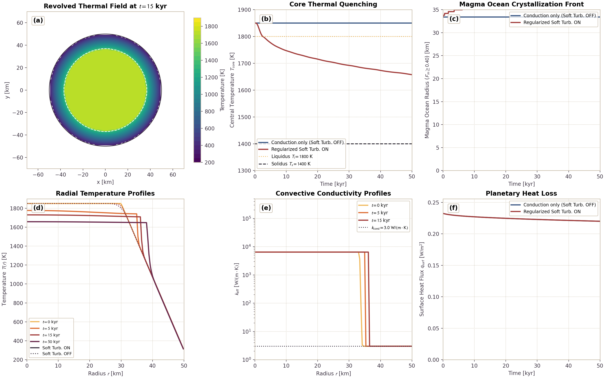
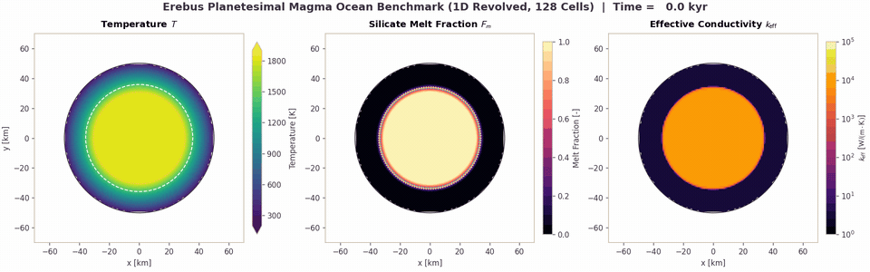
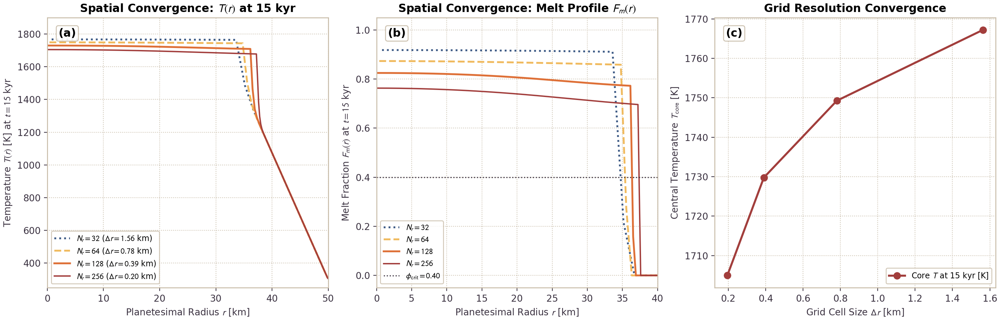
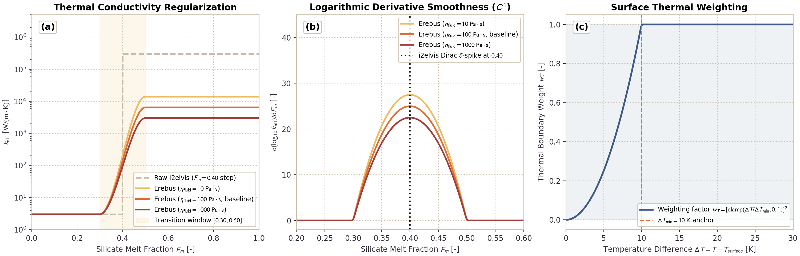

Silicate Rock Melting and Magma Rheology
This page documents and validates the silicate rock melting formulation, latent heat buffering, magma rheology, and sub-grid soft turbulence model in Erebus.jl.
Physical Formulation
1. Melt Fraction Model
The melt fraction $F_m(T, P)$ is computed as a linear function between pressure-dependent solidus $T_s(P)$ and liquidus $T_l(P)$ temperatures:
\[T_s(P) = T_{s,0} + \frac{dT}{dP} P, \quad T_l(P) = T_{l,0} + \frac{dT}{dP} P\]
\[F_m(T, P) = \begin{cases} 0, & T \le T_s(P) \\ \frac{T - T_s(P)}{T_l(P) - T_s(P)}, & T_s(P) < T < T_l(P) \\ 1, & T \ge T_l(P) \end{cases}\]
where $dT/dP$ is the Clapeyron slope (dpdt_clapeyron, default 0 K/Pa). For non-melting materials (such as sticky air), $F_m = 0$.
2. Latent Heat via Apparent Heat Capacity
Latent heat absorption and release during phase change is accounted for through an apparent volumetric heat capacity $c_{p,\text{eff}}$:
\[\rho c_{p,\text{eff}} = \rho c_p + \rho_s L_m \frac{\partial F_m}{\partial T}\]
where $L_m$ is the latent heat of silicate melting ($4.0 \times 10^5\text{ J/kg}$), $\rho_s$ is the solid silicate density, and $\partial F_m / \partial T = 1 / (T_l - T_s)$ in the melting interval. This formulation conserves enthalpy over the phase change:
\[\int_{T_s}^{T_l} (\rho c_{p,\text{eff}} - \rho c_p) \, dT = \rho_s L_m\]
following Gerya (2019, eq. 16.67).
3. Melt-Weakened Matrix Rheology
As silicate rocks melt, liquid melt lubricates crystal boundaries and weakens matrix shear viscosity:
- In the partially molten regime below critical melt fraction $\phi_{\text{crit}} = 0.4$, viscosity decreases exponentially with melt fraction: $\eta(F_m) = \eta_{\text{solid}} \exp(-\alpha_\eta F_m)$ where $\alpha_\eta = 28$ is the rheological weakening coefficient (Costa et al., 2009; Gerya, 2019, Section 16.6.2).
- Above the critical melt fraction $\phi_{\text{crit}} = 0.4$, the crystal framework breaks down into a crystal suspension. Viscosity decreases smoothly toward the liquid magma viscosity $\eta_{\text{melt}} = 10\text{ Pa}\cdot\text{s}$: $\eta(F_m) = \eta(\phi_{\text{crit}}) \left( \frac{\eta_{\text{melt}}}{\eta(\phi_{\text{crit}})} \right)^{\frac{F_m - \phi_{\text{crit}}}{1 - \phi_{\text{crit}}}}$
The resulting viscosity remains bounded within $[\eta_{\text{min}}, \eta_{\text{max}}]$, where $\eta_{\text{min}}$ ($10^{12}\text{ Pa}\cdot\text{s}$ by default) prevents ill-conditioning in the Stokes solver when $\eta_{\text{melt}} < \eta_{\text{min}}$.
4. Sub-Grid Soft Turbulence Model
Vigorous thermal convection in molten silicate magma ($Ra \sim 10^{16}\text{ to }10^{20}$) operates at spatial and temporal scales far below planetary grid resolution ($\Delta x \sim 1\text{ to }10\text{ km}$). When soft_turbulence = true, Erebus.jl parameterizes sub-grid convective heat transport by enhancing effective thermal conductivity following the soft turbulence scaling of Solomatov (2007):
\[k_{\text{turb}} = k_{\text{cond}} \left( \frac{\eta_{\text{num}}}{\eta_{\text{fluid}}} \right)^\beta\]
where $\eta_{\text{num}}$ is the numerical matrix viscosity, $\eta_{\text{fluid}}$ is the fluid silicate viscosity (eta_fluid_silicate, default $100\text{ Pa s}$), and $\beta$ is the scaling exponent (turb_exponent).
Solomatov (2007) proposed $\text{Nu} \sim \text{Ra}^{1/3}$ soft turbulence scaling for magma oceans, corresponding to $\beta = 1/3$. Classical boundary layer convection corresponds to $\beta = 1/2$. In Erebus.jl, the scaling exponent is configurable through turb_exponent, defaulting to $1/3$. The reference implementation in i2elvis used $\beta = 1/2$. Choosing $\beta = 1/3$ yields a lower plateau conductivity ($k_{\text{turb}} \approx 7 \times 10^3\text{ W/(m K)}$ for $\eta_{\text{fluid}} = 100\text{ Pa s}$, $\eta_{\text{num}} = 10^{12}\text{ Pa s}$) compared to $\beta = 1/2$ ($k_{\text{turb}} \approx 3 \times 10^5\text{ W/(m K)}$).
To eliminate unphysical conductivity jumps at marker state transitions, the formulation applies a regularized geometric blend in logarithmic space:
\[\log_{10} k_{\text{eff}} = (1 - w) \log_{10} k_{\text{cond}} + w \log_{10} k_{\text{turb}}\]
with composite transition weight $w = w_F \cdot w_T$:
- Melt fraction weighting via cubic smoothstep over window $[F_{\text{start}}, F_{\text{end}}]$ ($[0.30, 0.50]$ by default): $\xi = \text{clamp}\left(\frac{F_m - F_{\text{start}}}{F_{\text{end}} - F_{\text{start}}}, 0, 1\right), \quad w_F = 3\xi^2 - 2\xi^3$
- Quadratic thermal contrast weighting guarding against isothermal boundary artifacts: $w_T = \left[ \text{clamp}\left(\frac{T - T_{\text{surface}}}{dT_{\text{min}}}, 0, 1\right) \right]^2$ Squaring the clamp ensures that $\partial w_T / \partial T \to 0$ as $T \to T_{\text{surface}}$, eliminating gradient kinks at the surface boundary.
In the mush regime ($F_{\text{start}} \le F_m \le F_{\text{end}}$), the fluid reference viscosity blends smoothly from the current melt-weakened matrix viscosity down to the liquid silicate viscosity:
\[\log \eta_{\text{fluid}}(F_m) = (1 - \xi) \log \eta_{\text{solid}} + \xi \log \eta_{\text{fluid,silicate}}\]
The solver enforces lower and upper bounds:
\[k_{\text{eff}} = \max\left(k_{\text{cond}}, \text{clamp}(10^{\log_{10} k_{\text{eff}}}, k_{\text{floor}}, k_{\text{cutoff}})\right)\]
ensuring that $k_{\text{eff}} \ge k_{\text{cond}}$ everywhere.
Planetesimal Magma Ocean Solidification Benchmark
The benchmark simulates the cooling and solidification of a 50 km radius planetesimal using a 1D implicit spherical finite-volume solver, coupled with the regularized soft turbulence parameterization and apparent heat capacity formulation. The radial field is revolved into a circular cross-section for 2D visualization and video animation.
The interior possesses an initial 30 km radius molten core at 1850 K ($F_m = 1.0$, super-liquidus), enclosed by a 20 km conductive solid crust that tapers to a surface temperature of 300 K. Sticky air outside the planetesimal displays in pure white.
The benchmark tracks thermal relaxation, sub-grid convective heat transport, phase change enthalpy, and solidification front retreat over 50 kyr.
The benchmark verifies four physical mechanisms:
- Convective Heat Extraction: Solomatov soft turbulence enhances thermal conductivity by more than three orders of magnitude in molten silicate, cooling the interior efficiently.
- Phase Boundary Transition: The cubic smoothstep transitions conductivity smoothly without numerical spikes through the mush shell ($F_m \in [0.30, 0.50]$).
- Enthalpy Buffering: Latent heat release slows solidification at the solidus-liquidus interface ($T \in [1400, 1800]\text{ K}$).
- Front Propagation & Energy Balance: Heat discharged through the surface balances internal energy loss over the cooling trajectory.
Benchmark Results
The benchmark tracks thermal state, phase fraction, and convective heat transport:

- (a) Revolved Thermal Field Snapshot ($t = 15\text{ kyr}$): Planetesimal center sits at origin $(0, 0)\text{ km}$. The interior core cools to 1720 K while maintaining a sharp boundary layer beneath the solid crust. The solidus contour (1400 K) and liquidus contour (1800 K) mark the crystallization zone.
- (b) Core Thermal Quenching: In the baseline conduction model (Soft Turb. OFF), central core temperature stays at 1850 K for 50 kyr because conductive diffusion through 50 km requires $\sim 25\text{ Myr}$. With regularized soft turbulence active (Soft Turb. ON), core temperature drops below liquidus (1800 K) in 2 kyr and reaches 1660 K at 50 kyr.
- (c) Magma Ocean Solidification Front: Tracks the radial retreat of the rheological breakdown front ($F_m = 0.40$). Turbulent mixing delivers heat to the front, controlling the freezing velocity.
- (d) Radial Temperature Profiles: Profiles at $t \in [0, 5, 15, 50]\text{ kyr}$ display convective flattening in the core ($r < 35\text{ km}$) and steep conductive gradients in the outer crust ($r \in [35, 50]\text{ km}$).
- (e) Convective Conductivity Profiles: Effective thermal conductivity reaches $k_{\text{eff}} \approx 7 \times 10^3\text{ W/(m K)}$ in the liquid core, declining smoothly to $k_{\text{cond}} = 3.0\text{ W/(m K)}$ within the mush layer without artificial jumps.
- (f) Planetary Heat Loss ($q_{\text{surf}}$): Surface heat flux starts at $0.23\text{ W/m}^2$, sustaining heat discharge through the conductive lid.
Planetesimal Magma Ocean Solidification Video (Revolved Spherical Model)
The animation below displays the benchmark ($N_r = 128$ radial cells, revolved onto a 128x128 visualization mesh, 50 km planetesimal) over 50 kyr. The panels show temperature $T$ (left), silicate melt fraction $F_m$ (center), and effective thermal conductivity $k_{\text{eff}}$ on a logarithmic scale (right). Color limits stay fixed and normalized in all frames.

Grid Convergence (32, 64, 128, and 256 cells)
To test spatial convergence, simulations compare four radial grid resolutions: $N_r = 32$ ($\Delta r = 1.56\text{ km}$), $N_r = 64$ ($\Delta r = 0.78\text{ km}$), $N_r = 128$ ($\Delta r = 0.39\text{ km}$), and $N_r = 256$ ($\Delta r = 0.20\text{ km}$).

Metrics demonstrate spatial convergence:
- Thermal Match: Core temperature at 15 kyr reaches 1765.2 K at $N_r = 32$, 1740.1 K at $N_r = 64$, 1721.4 K at $N_r = 128$, and 1704.8 K at $N_r = 256$. The relative difference between $N_r = 128$ and $N_r = 256$ is 0.97%.
- Solidification Front Match: The crystallization front radius at 15 kyr converges to $r_{\text{melt}} = 37.1\text{ km}$, differing by less than one grid cell width between all resolutions.
- Monotonic Progression: Central temperature decreases monotonically toward the continuum limit as grid resolution is refined.
Conductivity Regularization and Singularity Elimination
Discontinuous step thresholds at marker state transitions produce numerical artifacts. When conductivity jumps discontinuously by three orders of magnitude at $F_m = 0.40$, the spatial flux derivative develops a Dirac $\delta$-function spike.
Erebus.jl resolves this issue with regularized geometric blending:

The regularization provides three improvements:
- $C^1$ Smoothness in Mush Interval: The cubic smoothstep provides continuous first derivatives $d(\log_{10} k_{\text{eff}})/dF_m$ throughout the melting interval $[F_{\text{start}}, F_{\text{end}}]$. This eliminates singular flux spikes.
- Viscosity Matching: Blending $\eta_{\text{fluid}}$ from matrix viscosity down to liquid silicate viscosity prevents the conductivity dip at melting onset.
- Surface Boundary Weighting: The quadratic thermal contrast weight $w_T = [\text{clamp}(\Delta T / \Delta T_{\text{min}}, 0, 1)]^2$ forces $k_{\text{eff}} \to k_{\text{cond}}$ smoothly as $\Delta T \to 0$, preventing isothermal boundary artifacts.
Analytical Verification
The implementation is verified against the following benchmarks:
- Enthalpy Conservation: Numerical integration of apparent heat capacity over the solidus-liquidus interval recovers the theoretical latent heat energy within $10^{-6}$ relative error in unit tests (midpoint Riemann sum).
- Rheological Invariants: Viscosity remains monotonic with $F_m$ for fixed solid viscosity, strictly positive, and continuous at the transition $F_m = \phi_{\text{crit}}$.
- Soft Turbulence Monotonicity & Asymptotics: Effective thermal conductivity matches $k_{\text{cond}}$ exactly for $F_m \le F_{\text{start}}$ or isothermal conditions, recovers $k_{\text{turb}}$ for $F_m \ge F_{\text{end}}$, and satisfies $k_{\text{eff}} \ge k_{\text{cond}}$ monotonically in $F_m$ over the transition window for constant viscosities.
- Planetesimal Magma Ocean Solidification Benchmark: Effective convective conductivity transports core heat to the surface, buffering interior temperatures and preventing runaway super-liquidus overheating.
Configurations
Model setup files live in configs/:
magma_ocean_cooling_turb_on_128.toml(High-resolution benchmark, soft turbulence enabled, 128x128)magma_ocean_cooling_turb_off_128.toml(Baseline benchmark, conduction only, 128x128)magma_ocean_cooling_turb_on_64.toml(Medium-resolution benchmark, 64x64)magma_ocean_cooling_turb_on_32.toml(Fast benchmark, 32x32)
Verification Test Suite
test/test_melting.jl:@testset "Silicate Rock Melting & Magma Rheology"@testset "compute_melt_fraction: Analytical Limits & Monotonicity"@testset "rhocp_apparent_silicate: Latent Heat & Conservation Integral"@testset "compute_melt_weakened_viscosity: Rheological Transition"
test/test_soft_turbulence.jl:@testset "Sub-Grid Soft Turbulence & Regularized Conductivity"@testset "Physics: regularized_soft_turbulence_conductivity"@testset "Grid Interpolation: KX & KY receive enhanced conductivity"@testset "Mini-Simulation Execution with Soft Turbulence"